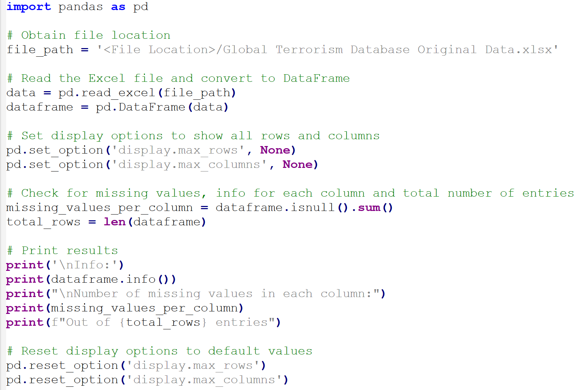
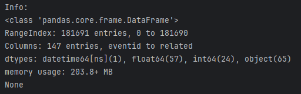

Analysis of Global Terrorism Trends (1970-2017)
Table of Contents
Task
For this project, I conducted a detailed analysis of the Global Terrorism Database spanning the years 1970 to 2017. Utilizing Power Pivot in Excel and Python, I delved into the dataset of over 181,691 data entries, examining total casualties, identifying the most affected country, analysing common weapons, and exploring the motives behind each attack.
The dataset was sourced from Global Terrorism Database by The University of Maryland, found on Kaggle, allowing for a comprehensive investigation into patterns and insights. Key objectives included uncovering trends in casualties, determining the country most impacted by terrorist attacks, and understanding the prevalent weapons and purposes associated with these incidents.
My responsibilities encompassed data extraction, cleaning, and transformation to facilitate robust analysis. Leveraging diverse tools and programming languages, I applied statistical methods to discern impactful patterns, gaining valuable insights into global terrorism trends over the specified period.
Tools Utilised

Background
The Global Terrorism Database (GTD) is a comprehensive repository of terrorism incidents worldwide, meticulously cataloged and managed by the National Consortium for the Study of Terrorism and Responses to Terrorism (START). It compiles data dating back to 1970, offering a systematic and detailed account of terrorist activities. The GTD relies on open-source information, including media reports, government publications, and academic research, ensuring a robust and unbiased dataset.
Recording incidents with precision, the GTD captures essential details such as location, date, and methods employed. It classifies each event, providing insight into the motivations, tactics, and actors involved. This database plays a pivotal role in academic research, policy analysis, and security assessments. By offering a comprehensive and standardized dataset, the GTD facilitates the identification of patterns, trends, and emerging threats, enabling a deeper understanding of global terrorism's evolving landscape. Its importance lies in informing evidence-based policies, enhancing national security strategies, and fostering a collective effort to counteract the complex challenges posed by terrorism.
Data Cleaning and Validation
- A Python script was developed to summarises key insights for each heading, describing the number of data types and number of blank and null values for each row, offering valuable information on the data types for each header.
- Verified for duplicates, and none were identified.
- The three columns representing year, month, and day were consolidated using the formula "=DATE(B2, IF(C2=0, 1, C4), IF(D2=0, 1, D2))." In this process, any instances where the month or day values were "0" were adjusted to "1." These instances were categorized as "unknown," and the data was standardized to maintain consistency by using the first day/month for all unknown dates.
- Two columns were created to address various aspects: one for removing blank entries in the "Weapons Used" category, and another for providing context to unknown weapons and simplifying non-explosive vehicle-related entries to "Vehicle." The formula used for the latter operation is "=IF(ISNUMBER(SEARCH("Vehicle",CK2)),"Vehicle",CK2)," and for the comprehensive approach, it is "=IF(CN2="Unknown Unknown Type", "Unknown Weapon",IF(ISNUMBER(SEARCH("Vehicle", CN2)), "Vehicle",CN2))."
- A column for the total number of casualities was added with the fomula to add number of killed and number of wounded values


Key Findings and Dashboard
Key Findings:
- Over the period of 1970 to 2017, 11% of terrorist attacks recorded were unsuccessful.
- Iraq emerged as the most targeted country in terms of terrorist attacks.
- Explosives were the most frequently used weapon (92,426 incidents), followed by firearms (58,524 incidents).
- The number of terrorism cases exhibited an exponential increase, reaching a peak at 16,903 in 2014.
- A substantial portion (90%) of attacks were motivated by political, economic, religious, or social goals.
- Among the top 5 terrorist groups, an unknown group accounted for a significant share (82,782 attacks), with the Taliban ranking second at 7,478 cases.
- The cumulative casualties from 1970 to 2017 amounted to nearly a million (935,737), with 44% (411,868) resulting in fatalities and 56% (523,869) causing injuries.
Excel Dashboard:
- A dashboard made with Excel has been implemented to showcase the findings from the dataset, with the following video below demonstrating its capabiltiies.
- This dashboard utilises many Excel functions such as nested IF functions, VLOOKUP/XLOOKUP and Power Pivot.
Conclusion
Analysis of the Global Terrorism Database from 1970 to 2017 has revealed crucial insights into the patterns and dynamics of terrorist activities worldwide. Noteworthy findings include a 11% failure rate in attacks, Iraq emerging as the most targeted country, and explosives being the most commonly used weapon. The exponential increase in terrorism cases, coupled with the predominant political, economic, religious, or social motivations behind 90% of attacks, underscores the complex nature of global terrorism. The project, executed using Python and Excel, contributes valuable insights for policymakers and security agencies, aligning with the assigned task's goal of leveraging analytical tools to uncover meaningful patterns in extensive datasets